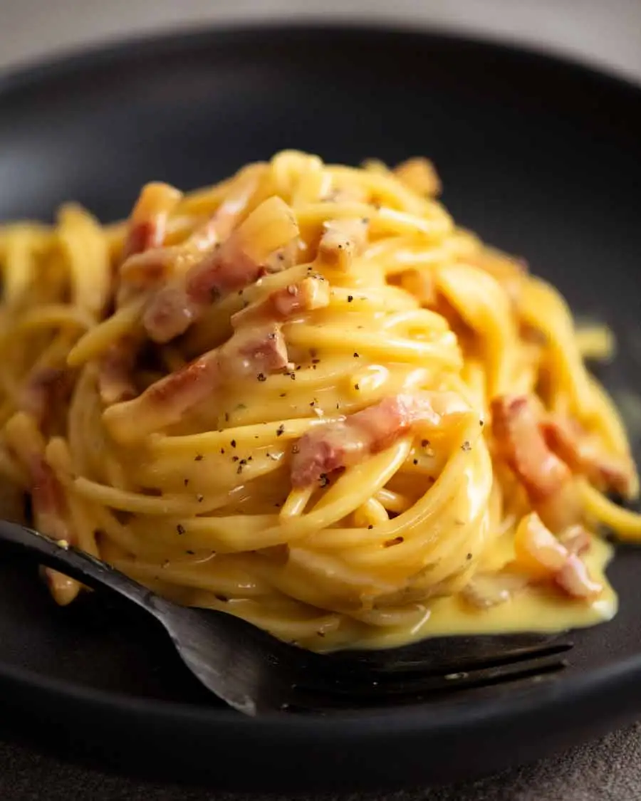

CARBONARA

Servings: 4 Prep time: 5 mins. Cook time: 15 mins.
This is a real spaghetti carbonara recipe made the traditional Italian way, without a single drop of cream.
It relies solely on egg and cheese to make a luscious, creamy carbonara sauce. Food fit for a king (or queen!) that proves simple can be magnificent.
Ingredients you need
- 2 large eggs
- 2 egg yolks
- 175g/6 oz guanciale (pancetta or block bacon)
- 400g/14 oz spaghetti
- Permigiano Reggiano
- 1 tbsp cooking/kosher salt
- Pepper
- 1/2 cup pasta cooking water
Instructions on how to make it
- Cut the guanciale into thick batons. Biting through the golden brown crust into meaty bits of salty guanciale is part of the awesomeness that is carbonara!
- Finely grate the parmigiana reggiano or pecorino.
- Whisk together the egg, cheese and pepper in a large bowl. It needs to be a large bowl because the pasta will be stirred into the sauce in the bowl, off the stove, to avoid scrambling the eggs.
- Bring 4 litres (4 quarts) of water to the boil with 1 tablespoon of salt. Cook the pasta per packet directions. It should be firm, not soft, but fully cooked through.
- Reserve pasta cooking water – Just before draining, scoop out one cup of pasta cooking water. Then drain the pasta in a colander.
- Cook guanciale until golden while the pasta is cooking. You don’t need any oil, the guanciale will fry in its own fat.
- Toss pasta in guanciale – Tumble the hot pasta into the pan with the guanciale then toss so the pasta gets coated in the guanciale fat.
- Transfer into sauce bowl – Tip the hot pasta into the bowl with the egg and use a rubber spatula to scrape out every drop of the guanciale fat into the bowl. That stuff is gold!
- Add 1/2 cup pasta cooking water into the bowl.
- Mix vigorously with the handle of a wooden spoon, spinning the pasta around, for around 30 seconds to 1 minute. Watch as the watery pale yellow liquid magically transforms into a creamy sauce.You know it’s ready when the sauce is no longer watery and pooled in the bottom of the bowl. Instead, it will be thickened, creamy, and clinging to the pasta!
- Serve immediately in warm bowls. Pasta waits for no one!
Return to top
Back